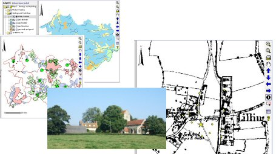

All: Centre for English Local History, 5 Salisbury Road, Leicester, LE1 7QR.
Richard Jones rlcj1@le.ac.uk, Christopher Dyer cd50@le.ac.uk, Mark Page mrp15@le.ac.uk
This article presents an interpretative synthesis of the development of a medieval landscape in the English Midlands. It explores its administrative organisation and divisions; the exploitation of its woodland, pasture, and arable resources; and the creation, growth, and decline of its villages, hamlets and farmsteads. It takes as its central theme two inter-related oppositions: continuity and change, moments and processes. In particular it examines the role these played in the development of varying settlement morphologies (the area under investigation contains both nucleated and dispersed settlement forms) and in the introduction and demise of the open field system.

The article is based on the investigation of twenty-one medieval villages and hamlets and their surrounding landscapes, straddling England's Northamptonshire-Buckinghamshire boundary and previously falling within the royal forest of Whittlewood. This work was undertaken between 2000 and 2005 as part of an AHRC (formerly ARHB)-funded research project. This enquiry, and the use it has made of the comparative method, has pinpointed moments of village and hamlet 'creation' and the alternative forms that these could take in their earliest phases. The subsequent development of these settlements has been charted, revealing the divergent paths they took towards the nucleated or dispersed plans they present when first mapped in the 17th, 18th or 19th centuries. This dynamic pattern of settlement has been set against a background of related changes to the authoritative landscape, which saw the fission and fusion of administrative units; to the economic landscape, which witnessed the development of the open field system and the re-organisation of woodland; and to social and cultural landscapes, affected inter alia by the growth and decline of population, and the imposition of Forest Law.
The reconstruction of these medieval village territories has only been achieved by adopting an interdisciplinary approach. Methodologies have included test pitting in village cores, larger excavations and trial trenches both within and outside the village, geophysical and earthwork survey, extensive fieldwalking, exhaustive documentary research, retrospective analysis of a rich corpus of early maps, targeted palaeoenvironmental sampling, detailed place-name study, and the comprehensive survey of the standing buildings of the area. This has generated a substantial body of evidence, the broader conclusions from which are due to be published in 2006 in a monograph entitled Medieval Villages in an English Landscape: Beginnings and Ends (Macclesfield, Windgather Press).
In embracing the unique opportunity offered by e-publishing (online GIS) and its integration with an extensive digital archive (hosted by ADS), this article thus aims to achieve far more than simply duplicating its sister publication. It does not offer the in-depth explanations for change that are set out in the monograph, but rather focuses on the mechanics of change. But by presenting all the data on which reconstructions of these villages' territories have been based, readers will be able to test the veracity of the conclusions outlined both here and in the monograph, and to identify the intrinsic strengths and weaknesses of each class of evidence. It is hoped that by providing access to the data, readers will be encouraged to explore their own research agenda and to develop different readings of the evidence on which alternative models of medieval settlement and landscape change can be built.
Go to Article Table of Contents
© Internet Archaeology
URL: http://intarch.ac.uk/journal/issue19/5/index.html
Last updated: Mon Sept 4 2006